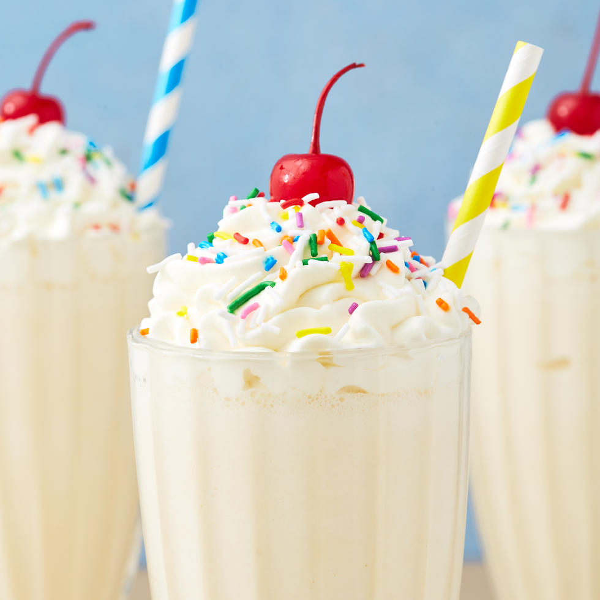

A nice and delicious vanilla milkshake!

The shake!
Here is a recipe for a cold and great tasting milkshake for those hot summer days... or just every other day!
Ingredients
- 4 large scoops (about 1 1/2 c.) vanilla ice cream.
- 1/4 c. milk.
- Whipped topping--for garnish.
- Sprinkles on top--again, for some nice garnish.
- Maraschino cherry--for garnish.
Steps
- In a blender, blend together ice cream and milk.
- Pour into a glass and garnish with whipped topping, sprinkles and a cherry.
- Yeah, that's it.
Disclaimer
This recipe was taken directly from Delish.com and was purely used as inspiration for this project. The exact recipe can be found here.